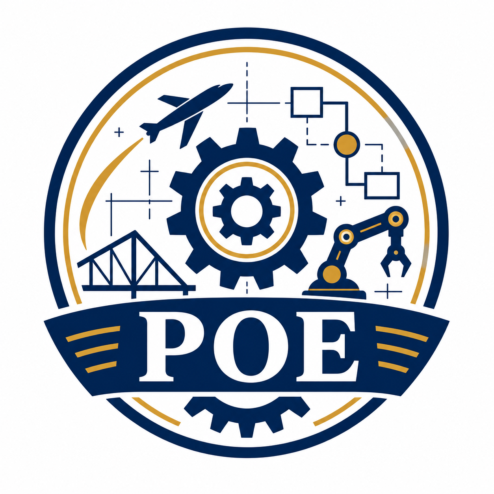

POE Unit 3 • Lesson 3.1
Introduction to Rover Robotics
Engineering question: How do a rover's subsystems work together to accomplish an exploration mission?
3.1–3.6 • Build & program base3.7 • Tug-of-War3.10 • Precision Driving3.12–3.14 • Add claw & retrieve samples3.16–3.18 • Rover QualificationUnit 4 • Sensors & planetary mission
The engineering problem
Planetary rovers must move, collect samples, communicate and respond to changing conditions. Engineers divide these tasks into subsystems that exchange energy, commands and mechanical forces.
Remote control follows live driver commands; autonomy follows programmed decisions, eventually using sensor information.
Clawbot construction rules
Start from the standard VEX V5 Clawbot chassis. Before tug-of-war, wheel type and drivetrain gear ratio can change; the base structure and drive-motor count remain standard. No additional ballast.
Do not install the arm or claw yet. Those mechanisms are added in Lesson 3.12. Sensors and advanced autonomy come in Unit 4.
Structure
The frame and fasteners support the robot, maintain alignment and carry mechanical loads.
Drivetrain
Motors, gears, shafts and wheels convert rotation into travel and pulling force.
Power
The V5 battery supplies electrical energy to the Brain and motors.
Control
The V5 Brain executes code and commands motors; a hand controller provides driver inputs.
Manipulator
A later arm and claw will grip, lift and release simulated samples.
Systems thinking: A working program cannot move the rover if the battery is disconnected, the motor wiring is incorrect or the drivetrain is jammed.
5 min — Engage
Study a planetary rover and identify mission capabilities.
10 min — Learn
Explain the five subsystems and the flow of commands, energy and motion.
10 min — Mission Brief
Review build constraints, unit milestones and the future Mars mission.
15 min — Analyze
Complete Parts A–D of the interactive assignment.
5 min — Export
Preview, download the PDF and submit it through Google Classroom.
Complete all four parts, then preview and download the PDF. Your draft saves on this device; it is not uploaded or automatically submitted.
In Lesson 3.2, you will examine motors, gears, shafts, bearings, wheels and structural components from the Clawbot kit.